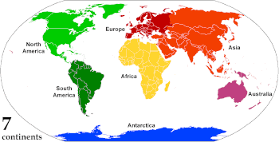

A continent is any of several large geographical regions. Continents are generally identified by convention rather than any strict criteria. A continent could be a single landmass or a part of a very large landmass, as in the case of Asia or Europe. Due to this, the number of continents varies; up to seven or as few as four geographical regions are commonly regarded as continents. Most English-speaking countries recognize seven regions as continents. In order from largest to smallest in area, these seven regions are Asia, Africa, North America, South America, Antarctica, Europe, and Australia.[1] Different variations with fewer continents merge some of these regions; examples of this are merging North America and South America into America, Asia and Europe into Eurasia, and Africa, Asia, and Europe into Afro-Eurasia.
Oceanic islands are occasionally grouped with a nearby continent to divide all the world's land into geographical regions. Under this scheme, most of the island countries and territories in the Pacific Ocean are grouped together with the continent of Australia to form the geographical region of Oceania.[2]
In geology, a continent is defined as "one of Earth's major landmasses, including both dry land and continental shelves".[3] The geological continents correspond to seven large areas of continental crust that are found on the tectonic plates, but exclude small continental fragments such as Madagascar that are generally referred to as microcontinents. Continental crust is only known to exist on Earth.[4]
The idea of continental drift gained recognition in the 20th century. It postulates that the current continents formed from the breaking up of a supercontinent (Pangaea) that formed hundreds of millions of years ago.